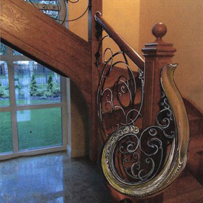

W naszej pracowni Iron Art staramy się połączyć dwa, z pozoru odrębne rzemiosła - kowalstwo artystyczne oraz metaloplastykę kolorową. Kowalstwo artystyczne jest nie tylko naszą pracą, lecz także pasją. Tworzymy wyroby nawiązujące do okresu secesji i nurtu Art Nouveau. Oferujemy naszym klientom z Warszawy, oryginalne, eleganckie i niepowtarzalne balustrady kute zewnętrze, wewnętrzne, meble kute, a także wyroby metaloplastyki kolorowej.

Nasza firma Iron Art, powstała jeszcze przed II wojną światową. Dziś możemy pochwalić się, że sięga ona aż czterech pokoleń i wciąż prężnie się rozwija. Z biegiem lat wprowadziliśmy do swojej oferty zarówno balustrady kute tarasowe, schodowe, jak i balkonowe zewnętrzne i wewnętrzne. Dbamy o każdy szczegół, zwracamy uwagę na każde zdobienie i dekorujemy nasze wyroby kamieniami półszlachetnymi.
Pracownia kowalstwa artystycznego - Warszawa
Dla klientów z Warszawy posiadamy szeroki wybór ciekawych, eleganckich wyrobów, tworzonych własnoręcznie w naszej pracowni kowalstwa artystycznego, które spełnią nie tylko swoją praktyczną funkcję, lecz także staną się wyjątkową ozdobą pomieszczenia i domu. Nasze dotychczasowe prace dostępne są w galerii na oficjalnej stronie internetowej pracowni Iron Art.
Oprócz balustrad kutych, tworzymy również:
- poręcze do balustrad,
- meble kute,
- ogrodzenia i bramy,
- wieszaki kute, żyrandole, ramy do luster, półki kute,
- wyroby metaloplastyczne do wyposażenia kościołów.
Oferujemy gotowe projekty balustrad kutych oraz mebli i innych wyrobów metaloplastyki kolorowej. Zapewniamy także wykonanie projektu zgodnie z oczekiwaniami naszych klientów. Dopasowujemy nasze wyroby oraz ich wymiary, do wymagań i potrzeb zleceniodawców, dzięki czemu oferujemy niepowtarzalne produkty, które wpiszą się w każdy gust.
Zapraszamy do zapoznania się z naszymi usługami. Zachęcamy również do kontaktu w celu uzyskania szczegółowych informacji na temat naszej pracy.